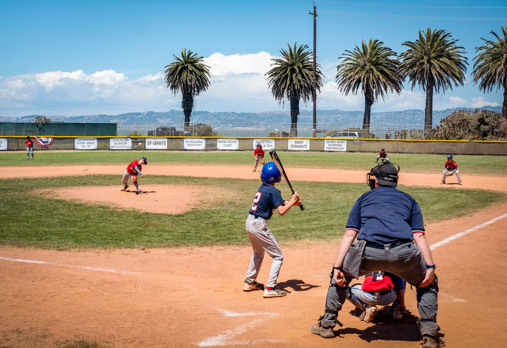

The foundation of a great practice structure
When designing baseball practice plans for young teams, the most important rule is to keep things moving. Children have limited attention spans, so long lectures or standing in lines for ten minutes will quickly lead to boredom and distraction. A successful practice should feel like a series of short, high-intensity bursts rather than a slow marathon.
A standard 60 to 90-minute practice session should follow a predictable rhythm. This helps kids know what to expect and reduces the time spent listening to instructions. Start with a warm-up, move into skill-specific stations, transition to team play, and always end with a high-energy game.
Mastering the fundamentals of throwing and catching
Every great baseball player starts with a solid arm. For young teams, the focus should not be on distance, but on mechanics and accuracy. Teach them the importance of a proper grip and the follow-through. If a child learns to throw correctly now, they will avoid many common injuries and performance plateaus later in their career.
The goal of youth coaching is not to build professional players overnight, but to build a love for the game through successful repetition.
Effective infield and outfield drills
Fielding is where many young players feel most intimidated. To build confidence, use drills that allow for frequent repetitions without the fear of making a mistake. Breaking the practice into infield and outfield rotations is an excellent way to keep all players active simultaneously.
For infield work, focus on the 'ready position.' Teach players to stay on the balls of their feet and keep their glove open and low to the ground. For outfielders, the emphasis should be on communication and tracking the ball in the air. Use tennis balls or soft-core baseballs if you find that players are becoming too fearful of being hit by a hard ball.
Hitting drills that build confidence
Hitting is often the most exciting part of practice, but it can also be the most frustrating for young players. Avoid the temptation to have every child stand in a long line waiting for a coach to pitch. Instead, utilize multiple stations to maximize 'swings per minute.'
Tee work is an essential component of any hitting curriculum. It allows players to focus purely on their swing path and hand positioning without the added difficulty of timing a moving ball. Once they master the mechanics on the tee, you can progress to soft toss or front toss drills.
Keeping engagement high with competitive games
To wrap up a session, always include a competitive element. This could be a modified scrimmage or a fun game like 'base running races.' Competition teaches kids how to handle pressure and how to work as a cohesive unit. It also ensures they leave the field wanting to come back for the next practice.
When planning these games, ensure they are inclusive. Every child should feel they have a chance to contribute to the win. Positive reinforcement is your most powerful tool here. Celebrate the great catches and the hard runs just as much as the home runs.
As players progress and move into more advanced stages of the game, their individual skills will require more specialized attention. For instance, once they have mastered basic throwing, they may need to learn the nuances of the mound. You can learn more about this by reading our guide on Mastering Baseball Pitching Mechanics Fundamentals at https://dhyey.bond/blog/mastering-baseball-pitching-mechanics-fundamentals/.
See Also
If you enjoyed this Baseball Guide article, check out Mastering Baseball Pitching Mechanics Fundamentals for more useful reading.